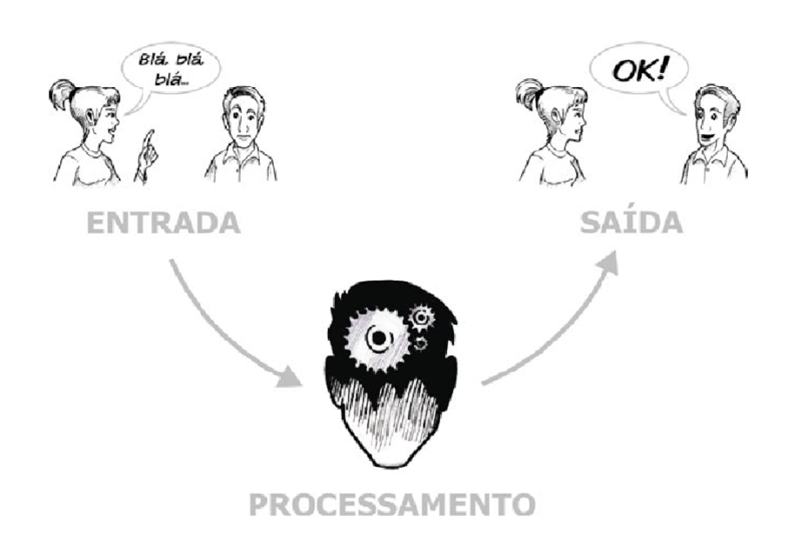
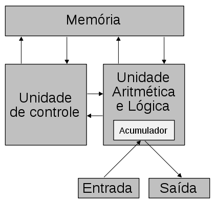

Organização básica de um computador:
- Processador
- Memórias
- Barramentos
- Dispositivos de E/S
Introdução
Um computador digital é uma máquina que pode resolver problemas para as pessoas executando instruções que lhe são dadas.
Uma sequência de instruções que descreve como realizar certa tarefa é denominada programa.
Os circuitos eletrônicos de cada computador podem reconhecer e executar diretamente um conjunto limitado de instruções simples, e, para que os programas possam ser executados, todos devem antes ser convertidos em instruções.
As instruções primitivas formam uma linguagem com a qual pessoas podem se comunicar com computadores. Essa linguagem é denominada linguagem de máquina
Os projetistas de computadores, geralmente fazem com que as instruções sejam as mais simples possíveis, coerentes com os requisitos de utilização e desempenho idealizados para o computador.
Como a maioria das linguagens de máquina são simples, todos acham difícil e entendiante usá-la.
Com o passar do tempo, essas observações resultaram em uma série de abstrações. Assim, a complexidade pode ser dominada e sistemas de computação podem ser projetados de modo estruturado, sistemático. Denominamos essa abordagem organização estruturada de computadores.
Portanto, existe uma grande lacuna entre o que é conveniente para as pessoas e o que é conveniente para computadores. As pessoas querem fazer X mas os computadores só podem fazer Y.
Para resolver este problema há duas abordagens (tradução e interpretação), ambas envolvem projetar um novo conjunto de instruções que seja mais conveniente para as pessoas usarem do que o conjunto de instruções que já vem embutido na máquina.
Tradução:
Caracteriza-se pela criação de um programa em um nível de abstração acima da linguagem de máquina.
As instruções criadas nessa linguagem de "alto nível" são substituídas pelas instruções de linguagem de máquina.
O programa responsável por executar esta substituição é chamado de compilador.
Interpretação:
Também é caracterizado pela criação de um programa em um nível de abstração acima da linguagem de máquina.
As instruções criadas nessa linguagem de "alto nível" são consideradas como entrada para a linguagem de máquina, a execução é feita instrução por instrução de forma sequencial.
O programa responsável por executar esta interpretação é chamado de interpretador.
Tais técnicas resultam no conceito de máquinas multiníveis apresentada na tabela a seguir:
| Nível 5 | Nível de linguagem orientado a problemas | Tradução (compilador/interpretador) |
| Nível 4 | Nível de linguagem de montagem (assembly) | Tradução (assembler) |
| Nível 3 | Nível de sistema operacional de máquina | Híbrido entre ISA e conjunto de instruções do SO (organização de memória, pipeline) |
| Nível 2 | Nível de arquitetura de conjunto de instruções | Nível de arquitetura do conjunto de instruções(ISA) |
| Nível 1 | Nível de microarquitetura | Unidade Lógica e Aritmética (ULA) |
| Nível 0 | Nível lógico digital | Portas lógicas |
Nível lógico digital:
As portas são o objeto de interesse. Embora, constituídas com componentes analógicos, como transistores, as portas podem ser modeladas com precisão como dispositivos digitais.
Nível de microarquitetura:
Formado por um conjunto de 8 a 32 registradores que formam uma memória local e um circuito denominado ULA, que é capaz de executar operações aritméticas simples.
Os registradores são conectados à ULA para formar um caminho de dados através do qual os dados transitam.
Nível de arquitetura de conjunto de instruções:
Também chamado de nível ISA.
Todo fabricante de computadores pública um manual para cada um dos computadores que vende, intitulado "Manual de referência de linguagem de máquina".
Esses manuais descrevem o conjunto de instruções.
Nível de sistema operacional de máquina:
Este nível pose ser considerado híbrido por mesclar as instruções do nível ISA com novos conjuntos de instruções, como organização de memória e pipeline.
Nível de linguagem de montagem:
Forma simbólica para uma das linguagens subjacentes.
Fornece um método para as pessoas escreverem programas para o nível 1, 2 ou 3, e em seguida interpretado pela máquina real.
O programa que realiza a tradução é denominado assembler.
Nível de linguagem orientado a problemas:
Linguagens projetadas para ser usadas por programadores de aplicações que tenham um problema a resolver.
Normalmente denominadas como linguagens de alto nível.
Programas criados por estas linguagens são traduzidos ou interpretados para os níveis 3 ou 4 (JAVA, C, C++)
Programas em JAVA, por exemplo, costumam ser primeiro traduzidos para uma linguagem semelhante à ISA denominada "bytecode", que é então interpretada.
Histórico
Primeira geração (1945-1955)
Criação do computador eletrônico motivado pela 2º guerra mundial (dispositivo ENIGMA).
Alan Turing surge como principal mentor do computador COLOSSUS (1943), primeiro computador digital eletrônico do mundo. O projeto ficou em sigilo secreto por 30 anos.
John Mauchley patrocínado pelo exército americano cria o computador ENIAC (1946). Um ano após o fim da guerra acontece a famosa escola de verão que originou vários outros projetos.

John Von Neuman desenvolve um projeto para computadores utilizado até os dias de hoje, a máquina de Von Neuman é ainda base de quase todos os computadores digitais.

Representação de dados e sistemas de numeração
Álgebra booleana
Portas lógicas
Tabela verdade
Implementação e minimização de funções lógicas
Circuitos combinacionais básicos:
- Multiplexadores
- Demultiplexadores
- Decodificadores
- Codificadores
- Circuitos aritméticos
Temporização
Circuitos sequenciais:
- Flip-flops
- Registradores
- Memórias